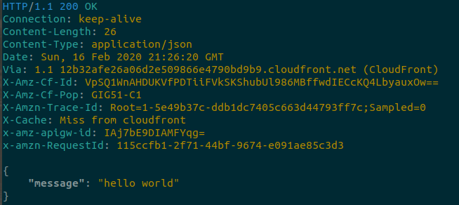

Build a Serverless Python API using AWS SAM
As it’s used today, serverless computing means that the service provider manages the computing resources (e.g. keeps the firmware up to date) and the resources scale up and down automagically (horizontally and/or vertically to meet demand). No more; no less.
Lucas Still on Modus Create - Serverless All the things
Serverless architecture is becoming more and more popular: Amazon launched AWS Lambda, Microsoft has Azure Functions and Google has Cloud Functions. Now not only can you stop worrying about manually provisioning, managing and upgrading servers, but also pay only for what you use.
Why you don't need to worry about managing a server
You may be already familiar with traditional cloud usage model: provisioning servers, deploying code to the cloud and manage resources usage and scaling. This is still the right thing to do in most scenarios, but there's a new way to do it.
For example, if you have an application that allow users to upload profile pictures and you need to resize those images and store them on Amazon S3, you can handle this by using a AWS Lambda.
Using a serverless architecture can also help reducing costs, since with Lambda you only pay for execution costs.
The AWS Lambda free usage tier includes 1M free request per month and 400.000 GB-seconds of compute time per month.
SAM - Serverless Application Model

SAM is an open-source framework for building serverless applications. It provides syntax to express APIs, databases, functions, and event source mappings. Writing a few lines of YAML, you can create IAM roles, define resources and create your application.
Instalation
To learn how to install sam cli, check the official docs (there are different processes for Windows and Linux systems).
And you should also have aws cli installed to configure your credentials so sam cli knows about it.
pip install awscli --upgrade --user
aws configure
To get your AWS (Access/Secret) Keys go to your AWS account > My Security Credentials
Using SAM command line interface
You can create a new project using the command sam init and following its instructions. Here I'm creating a Python 3.8 Lambda function.
SAM Template
AWSTemplateFormatVersion: '2010-09-09'
Transform: AWS::Serverless-2016-10-31
Description: >
aws-sam-opencv
Sample SAM Template for aws-sam-opencv
Globals:
Function:
Timeout: 3
Resources:
HelloWorldFunction:
Type: AWS::Serverless::Function
Properties:
CodeUri: hello_world/
Handler: app.lambda_handler
Runtime: python3.8
Events:
HelloWorld:
Type:
Properties:
Path: /hello
Method: get
Outputs:
HelloWorldApi:
Description: "API Gateway endpoint URL for Prod stage for Hello World function"
Value: !Sub "https://${ServerlessRestApi}.execute-api.${AWS::Region}.amazonaws.com/Prod/hello/"
HelloWorldFunction:
Description: "Hello World Lambda Function ARN"
Value: !GetAtt HelloWorldFunction.Arn
HelloWorldFunctionIamRole:
Description: "Implicit IAM Role created for Hello World function"
Value: !GetAtt HelloWorldFunctionRole.Arn
This should be your SAM template.yaml file if you're following the sam init process. It's a bit confusing and there's a lot of room for error (extra attention to indentation).
So it will look in your hello_world folder for app.pyfile with the lambda_handler method.
def lambda_handler(event, context):
"""Example Function and Handler"""
return {
'statusCode': 200,
'body': json.dumps('Hello from Lambda!')
}
Validate the template file
sam validate will take a look at your template.yaml file and see if it looks correct. This command is very useful because it checks for removed references and wrong indentation.
Build and deploy
To deploy, let's first build it using sam build --use-container This will build the source of your application and prepare it to run locally (with sam local invoke) or to ship it to AWS.

Then it's time to package and deploy your application to AWS, with a series of prompts:
sam deploy --guided
- Stack Name: The name of the stack to deploy to CloudFormation. This should be your project name.
- AWS Region: The AWS region you want to deploy your app to.
- Confirm changes before deploy: If set to yes, any change sets will be shown to you before execution for manual review. If set to no, the AWS SAM CLI will automatically deploy application changes.
- Allow SAM CLI IAM role creation: Many AWS SAM templates, including this example, create AWS IAM roles required for the AWS Lambda function(s) included to access AWS services. By default, these are scoped down to minimum required permissions.
- Save arguments to samconfig.toml: In the future you can just re-run
sam deploywithout parameters to deploy changes to your application, because your choices will be saved in asamconfig.tomlfile.
At the end of your process, you should see a URL with the production environment of your API. If all went well, you can just access it to get your Hello World using SAM.

Have fun!
References
Articles:
- Meet AWS SAM CLI: sam init
- AWS Lambda with Python: A complete getting started guide
- Build a Serverless Web Application with AWS Lambda, Amazon API Gateway, Amazon S3, Amazon DynamoDB, and Amazon Cognito
- AWS Serverless Application Model SAM Command Line interface build, test and debug
Videos:
- Deep Dive into AWS SAM
- Learn AWS Lambda from scratch
- Start Right Using AWS SAM: Treat Your Infrastructure the Way You Treat Your Code
- Managing Serverless Applications with SAM Templates
- Build serverless applications with AWS Serverless Application Model (AWS SAM)